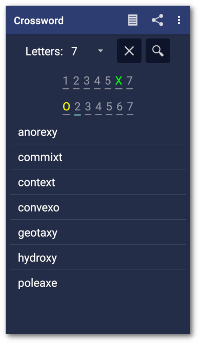
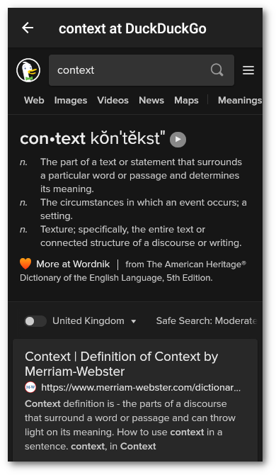
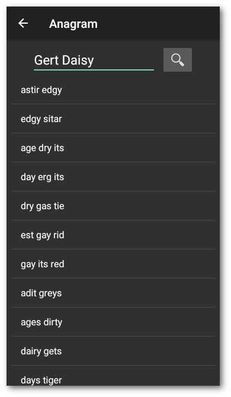
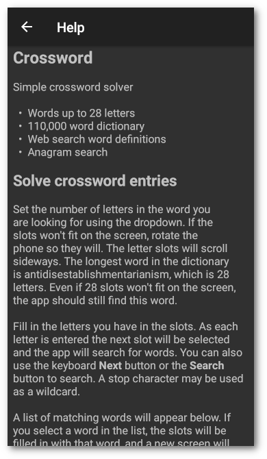

Introduction
Android crossword solver.
 
 
- Words up to 28 letters
- 110,000 word dictionary
- Web search word definitions
- Anagram search
Solve crossword entries
Set the number of letters in the word you are looking for using the dropdown. If the number of slots won’t fit on the screen, rotate the phone so they will. The letter slots will scroll sideways. The longest word in the dictionary is antidisestablishmentarianism, which is 28 letters. Even if 28 slots won’t fit on the screen, the app should still find this word.
Fill in the letters you have in the correct position in the first row of slots, coloured green. Fill in letters that are in the word in any position in the second row of slots, coloured yellow. As each letter is entered the next slot will be selected and the app will search for words. You can also use the the keyboard Next button or the Search button to search. A stop character may be used as a wildcard.
The search will find words that have the letters in the first row in the position entered, and the letters in the second row in any position.
A list of matching words will appear below. If you select a word in the list, the slots will be filled in with that word, and a web search will be made for the definition on DuckDuckGo. You may select links on the page and navigate back using the Home button on the toolbar.
There are three icons in the toolbar: Anagram, which will show the anagram screen, Help, which will show the help screen, and About, which will show the copyright, licence and version.
And on the menu, Theme, which will change the app theme. On Android 6, Marshmallow, the theme will not change until you rotate the device or restart the app. On other versions the theme will change immediately. This is due to an issue with Android 6 which would otherwise cause the app to crash.
Solve anagrams
Type in the word or phrase you want anagrams for, and use the keyboard Next button or the Search button to search. The search may take a long time, depending on the length of the phrase. During the search the Search button is disabled. The anagram search uses a smaller 58,000 word dictionary to reduce the search time, and because the larger dictionary contains a large number of not very useful three and four letter words and acronyms.
A list of anagrams will appear below, sorted in reverse order of value, derived from Scrabble letter values. If you select an entry in the list, the entry will be copied to the input field and a new screen will show a web search for the definition of the entry on DuckDuckGo.
The results are ordered by an algorithm using Scrabble letter values to hopefully get the more interesting anagrams to the top of the list. That doesn’t mean that some gems might not be hiding down the list.
This anagram algorithm is intended as a useful additional function to the crossword clue search, but is in no way comprehensive. Use one of the online anagram sites, such as Wordsmith.org for a more comprehensive search.